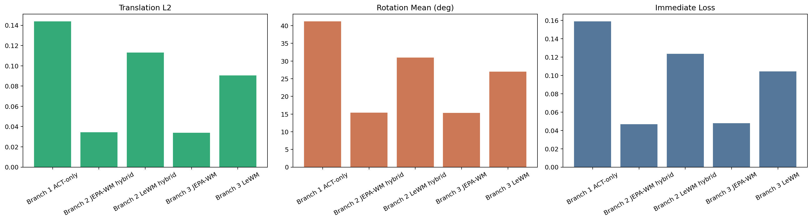
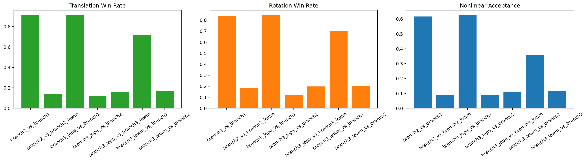

The policy proposes possible wrist motions. The world model scores the likely future produced by each motion before one candidate is selected.
These are preliminary thesis-facing numbers from the corrected benchmark surface. Remaining final runs should refine wording, not the purpose of this talk.

